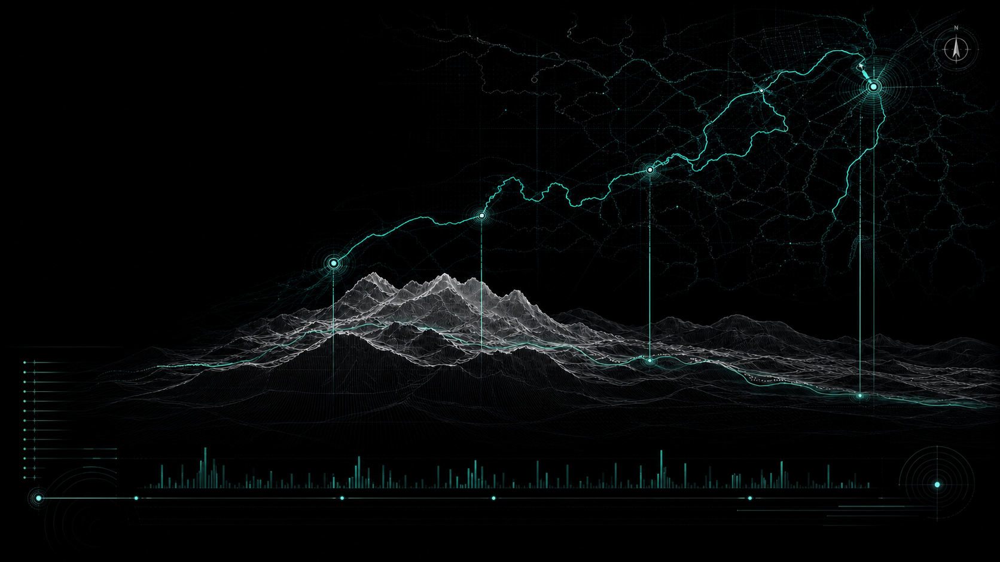

唐诗之路
浙东
浙东的山水与诗心
Tang Poetry Road
Landscape and Poetic Mind in Eastern Zhejiang
唐诗之路，取道浙东山水之间，
从镜湖出发，溯若耶溪与山阴溪，
越台山之巅，抵天台之境。
诗与地理互为映照，行旅与心灵共振。
这是一条由诗人足迹、自然地理
与历史文脉共同织就的文化路径。
行政区域
4Regions核心地点
12Sites关联诗作
128Poems行旅长度
约180kmDistance诗人行迹Poetic Journey
主要地点Key Locations
水系河流River System
山脉地形Mountain System
诗歌数量Poetry Count
海拔高度Elevation
天台山Tiantai Mountain
山阴溪Shanxi Creek
若耶溪Ruoye Creek
会稽Kuaji
镜湖Jinghu
天台山佛国仙山诗作 36 首
海拔 1098 m
海拔 1098 m
山阴溪南流曲折诗作 28 首
海拔 180 m
海拔 180 m
若耶溪绿竹名岸诗作 42 首
海拔 35 m
海拔 35 m
镜湖越中明镜诗作 22 首
海拔 5 m
海拔 5 m
诗作分布
（首）
（首）
浙东唐诗地理可视化研究
Digital Humanities Project
Digital Humanities Project
数据来源：唐诗全文数据库 / 地理空间数据云 / 浙江省文旅资源库
Zhejiang, China 中国 · 浙江